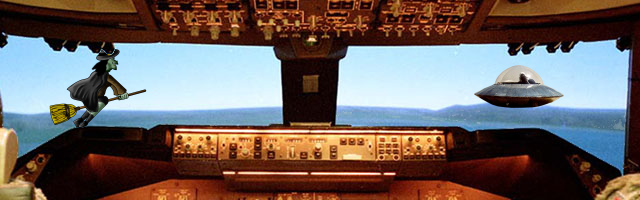
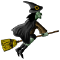
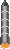
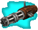
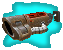

- Hast du DAS gesehen?
- Was?
- --- Ach, vergiss es...

- Hexe 42 auf Patroullienflug 4711. Habe seltsame Phänomene gesehen.
- Kristallkugel: (knister) UW HQ, Platz 667. Bitte spezifizieren sie "seltsam".
- Kann ich nicht, ohne dass Ihr mich für verrückt haltet. Ich gehe dem nach. Ändere daher den Kurs auf 90°NS.
- Kristallkugel: (rausch) OK. Passen Sie aber auf, die dortige Tierwelt ist äußerst aggressiv.
- Bitte um Freigabe des Froschzaubers.
- Kristallkugel: Freigabe erteilt. Gute Jagd!
Mir ist es bitter kalt. Die Leute machen sich keine
Gedanken darüber, was in dieser Höhe für eine eisige Luft und noch eisigerer Wind herrscht. Mann kann so viel anziehen,
wie man will, es nützt nichts. Wer weiss, wie lange ich das noch aushalte. Was ich jetzt brauche, ist eine schöne Tasse
heissen schwarzen Kaffee, möglichst Java-Kaffee.
Auszug aus dem Hexen-Handbuch:
Bewegung
Dies ist der SkyMaster (tm) 9000 Standard-Patroullienbesen.
Mit seinen 5928 Borsten ist er optimal für lange Patroullieneinsätze ausgestatten.
Gesteuert wird er über die "niederen Bewegungs Zauber".
Mittels des Zaubers Pfeiltaste nach oben steigen Sie auf, mit dem Zauber Pfeiltaste nach unten sinken Sie.
Die Zauber Pfeiltaste Rechts / Links sind zum Beschleunigen bzw. zum Bremsen. Achten Sie darauf, dass dieser
Besen eine Grundgeschwindigkeit braucht, um nicht abzustürzen. Daher ist ein Stehenbleiben oder gar Rückwärtsfliegen unmöglich!
Verteidigungseinrichtungen
Der SkyMaster (tm) 9000 kann auch für leichte Luftgefechte mit diesen Waffen ausgestattet werden:
Der Froschzauber ist der Standardzauber, mit dem alle Besen der UW ausgestattet sind. Das ist die richtige Waffe,
um Angst und Schrecken zu verbreiten. Davor haben alle Angst: In einen Frosch verzaubert zu werdern. Aber Achtung!
Nur bei niederen Wesen, wie z.B. dem Menschen klappt der Zauber sofort. Höhere Wesen haben eine größere Realitätsbindung,
so das man diese öfter überzeugen muss.

Das Problem bei bisherigen Zaubern ist, dass nur ein Bruchteil der magischen Energie am Ziel Wirkung erzeugt.
Daher hat die Forschungsabteilung von UW einen selbstfliegenden Magiebehälter konstruiert.
Dieser Magiebehälter kann sowohl in die angegebene Richtung fliegen, als auch andere Lebewesen verfolgen.
Achtung! Uns wurde berichtet, das einige Konstruktionsunterlagen entwendet wurden. Haltet da draußen die Augen offen!

Dem Gerücht nach, soll Leonardo da Quirm das "Gefähr" gebaut haben.
Aber was er nicht wusste war, dass er eine Waffe mit Seele baut.
Einer schwarzen Seele. Jeder Mensch der diese Waffe berührt, verfällt sofort seiner Macht.
Aufgrund ihrer Magischen Fähigkeiten haben Hexen allerdings eine höhere Resistenz gegen die Verlockungen.
Das Gefähr verschiesst in schneller Folge kleine Bleiklumpen. Das Pulver Nr. 1 (Kohle, Schwefel und Salpeter, in unbekannten Verhältnis) hat irgendwas damit zu tun.

Der mächstige Fluch der Hexen ist der Hexenschuss.
Es gibt kaum - um nicht zu sagen: keine - Objekte, die einen unmittelbaren Treffer aushalten.
Allerdings wird dafür äußerst viel magische Energie benötigt,
und das erholen nach diesem Fluch dauert fast ewig.
Schwester! Sei sparsam mit diesem Fluch! Aber setze Ihn ein, wenn notwendig!
Der SkyMaster (tm) 9000 kann zwar alle Zauber gleichzeitig tragen, aber immer nur einen aktiviert halten.
Um zum nächsten Zauber umzuschalten, wirken sie den Zauber Rechte Maustaste.
Aber Vorsicht! Jeder Zauber benötigt Magische Energie! Zwar absorbiert der Skymaster (tm) 9000 laufend Magie aus der Umgebung,
aber nicht schnell genug, um die Zauber nonstop zu wirken. Irgendwann ist der interne Magie-Speicher leer.
Dann muss man warten, bis sich wieder genug Magie angesammelt hat, um weitere Zauber zu bewirken.
Der Magievorrat des Besens ist am unteren Bildrand als blauer Balken sichtbar.
Achten Sie immer auf die Magievorräte!
Die Kampfzauber bewirken Sie, indem sie den Zauber Mausklick in Ihrer Umgebung wirken.
Effektiver wird es, wenn die den Zauber "Mausklick" auf die beiden Zauber Mausgedrückt und Mausloslassen aufteilen,
und zwischen den Zaubern etwas zeit vergehen lassen.
Sonstiges
(dieses ist auf einen Notizzettel aufgeschmiert, der im Handbuch zwischen Seite 55, 56 (Reinigung der Borsten) steckte)
Schwester! Wir - die UW-Konstruktionsabteilung - haben diesen Besen mit einer Zeitkontrolleinrichtung ausgestattet.
Wirke den Zauber Leertaste, und die Zeit hält an. So kannst du die Situation in Ruhe überdenken.
Es gibt aber eine kleine Nebenwirkung: Das Licht wird im "Pause-Modus" schwächer. Dies ist aber nicht von Dauer.
Sobald du den Zauber Leertaste wieder bewirkst, geht die Zeit normal weiter, und das Licht ist wieder da.
(c) der UW e.V., H.Reg.Nr 0x29A
UW - United Witches, ein Verein der magiefähigen Frauen zur Überwachung und Verteidigung des Luftraums.
Treten Sie jetzt in unseren Verein, und geniessen Sie diese Vorteile:
- monatliches Magazin mit den neuesten Rezepten - so klappt das auch mit dem Nachbarn!
- Fluggenehmigung rund um ihren Wohn- und Arbeitsplatz!
- Schutz vor fundamentralen Christen. Wir haben Freunde in hohen Positionen!
- Zugang zu unserer Bibliothek mit über 2^20 Rezepten! Hier ist für oder gegen alles was dabei!
- Laden und Speichern deines aktuellen Lebens! Probier verschiende Situationen aus!
Kosten: Kosten 53 Taler, alternativ 3 Kröten, 5 Spinnen und 1 Kilo Misteln
Außerdem Verpflichtung zum regelmäßigen Patroulliendienst zur Grenzkontrolle